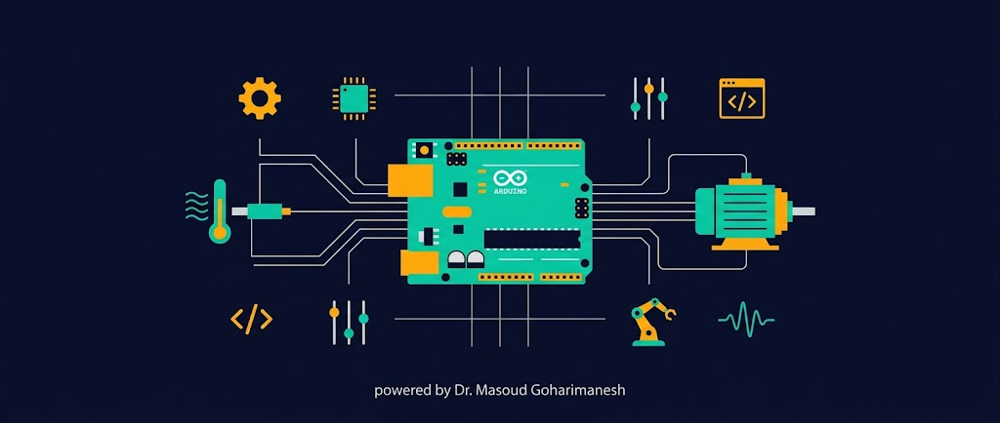
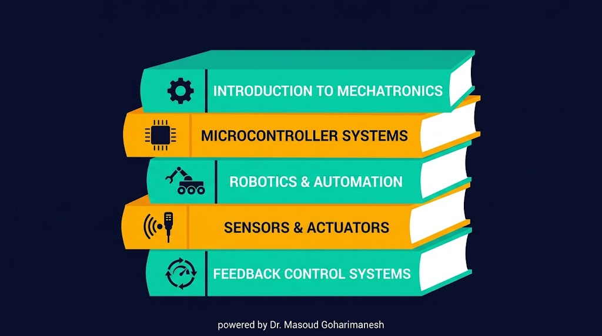

از مبانی نظری تا پیادهسازی عملی — با رویکرد ویژه به پروژههای رباتیک و اتوماسیون

مشخصات، پیشنیازها و رویکرد آموزشی مکاترونیک ۱
روی هر فاز کلیک کنید تا جلسات همان فاز در جدول نمایش داده شود
۱۶ جلسه تئوری + ۸ جلسه عملی — هر جلسه شامل محتوای درس و یک پادکست/ارائه مجزا
| جلسه | نوع | موضوع | محتوا |
|---|
ساختار پوشهها: sessions/session-XX/index.html و sessions/session-XX/podcast-XX/index.html
مجموع ۲۰ نمره — با تمرکز بر پروژه کاربردی رباتیک
آزمون کتبی جامع از کل مباحث تئوری و عملی درس
مدلسازی، شبیهسازی و پیادهسازی با آردینو + سنسور + عملگر
حل تمرینهای کلاسی + ۸ گزارش آزمایشگاه عملی
هر پروژه شامل: مدلسازی، شبیهسازی و پیادهسازی عملی با آردینو
رویکرد پروژهمحور: تمام پروژهها در یک مسیر مشخص و همراستا طراحی شدهاند تا شما را از مبانی تا پیادهسازی یک سیستم کامل اتوماسیون و رباتیک هدایت کنند. هر پروژه شامل سه مرحله است: مدلسازی، شبیهسازی و پیادهسازی با آردینو.
واژهنامه تخصصی، فرمولهای کلیدی، آموزشها و نکات، نرمافزارها، انجمنها، همایشها، مجلات و راهنمای پژوهش در ایران
نمایهها، رتبهبندی مجلات، و زمان برگزاری همایشها هر سال تغییر میکنند؛ پیش از ارسال مقاله یا ثبتنام، وضعیت فعلی را در وبسایت رسمی، ISC و فهرست مجلات نامعتبر وزارت علوم بررسی کنید.
مراجع اصلی درس مکاترونیک ۱ برای مطالعه بیشتر

مقدمهای بر مکاترونیک، دیوید جی. آلبارن و دیگران، ترجمه
اصول و کاربردهای مکاترونیک، رابرت اچ. بیشاپ، ترجمه
سیستمهای مکاترونیکی، دلیو بولتن، ترجمه
جزوات و اسلایدهای درسی استاد
Arduino Cookbook — Michael Margolis (منبع عملی رباتیک)